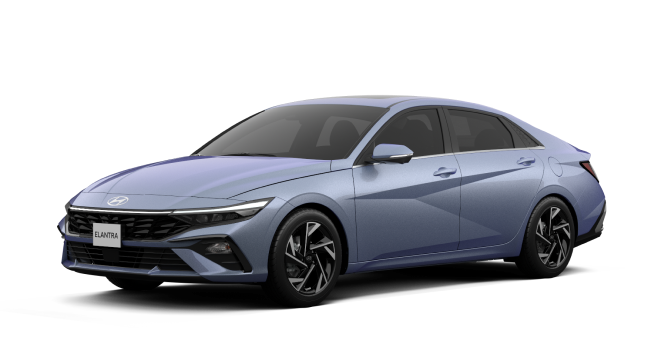

Elantra 2023

نبذة عن السيارة:
تُعد elantra2023 واحدة من أكثر السيارات الأسطورية في تاريخ elantra2023. صُممت هذه النسخة الخفيفة
الوزن من طراز E9 خصيصًا للمشاركة في سباقات أوروبا للسيارات
السياحية، وتم إنتاجها بأعداد محدودة جدًا، مما يجعلها نادرة ومرغوبة بشدة
لدى جامعي السيارات الكلاسيكية. اشتهرت بلقب "باتموبيل" بسبب تصميمها
الانسيابي الجريء ومجموعة الأجنحة الهوائية التي زُودت بها في بعض النسخ
أبرز المواصفات :
- وزن خفيف بفضل استخدام الألمنيوم والزجاج الرقيق.
- محرك 6 سلندر بقوة تصل إلى 206 حصان.
- فازت بعدة بطولات في أوروبا للسيارات السياحية.
- لقب "باتموبيل" بسبب تصميمها الجريء.
- استثمار نادر ومرغوب لهواة جمع السيارات.
المواصفات الفنية لسيارة
Elantra2023
| الطراز |
Elantra 2023 |
| المحرك |
6 أسطوانات متتالية (in-line6) |
| السعة اللترية |
3.0 إلى 3.2 لتر |
| القوة الحصانية |
حوالي 200 إلى 206 حصان |
| ناقل الحركة |
يدوي ب4 أ 5 سرعات |
| الدفع |
خلفي (RWD) |
| السرعة القصوى |
220 كم/س |
| الهيكل |
كوبية بخاصية تخفيف الوزن |
| الفرامل |
قرصية على الأربع عجلات |
| الجنوط |
14 بوصة |